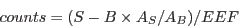
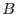
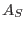
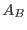
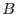
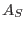
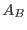
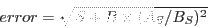

|  | (1) |
where  is the counts within the source region,  is the total background
counts and ,  are the area of the source and background
regions respectively.
is the counts within the source region,  is the total background
counts and ,  are the area of the source and background
regions respectively.
The background is simply scaled by the respective box areas; no vignetting correction of any sort is made. The error is calculated from photon statistics as:
|  | (2) |
NB: This is only reliable for circular source regions, see section 3.2.9